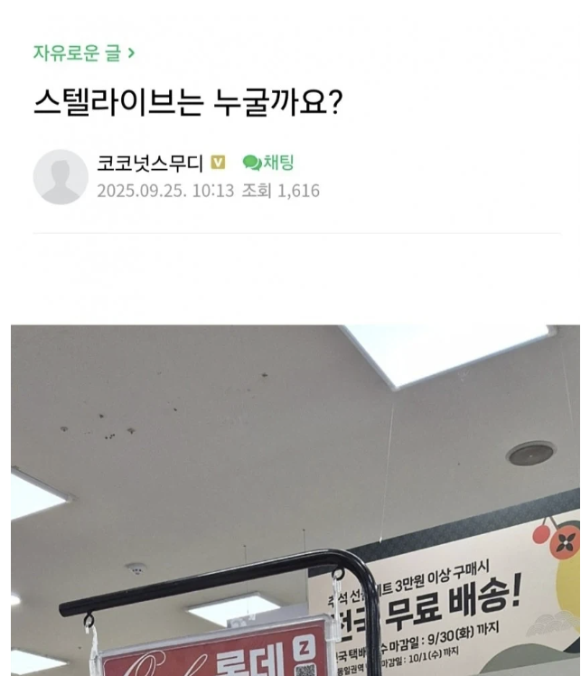
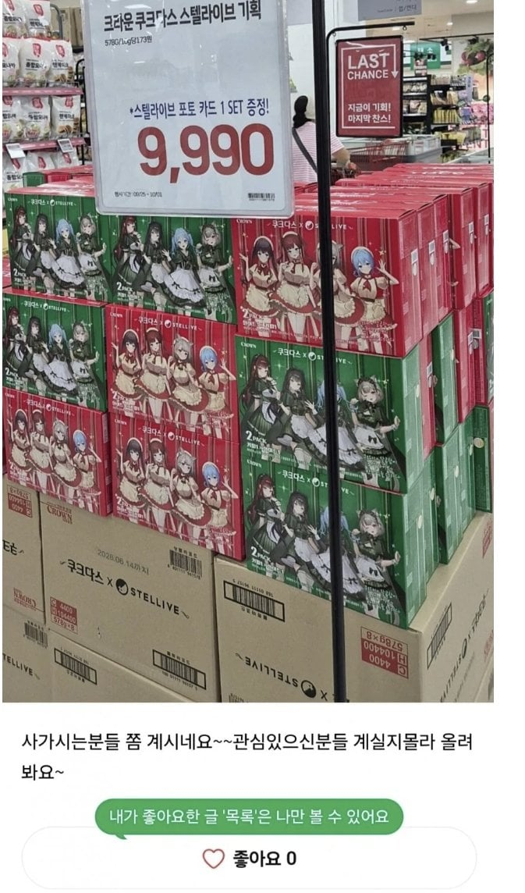
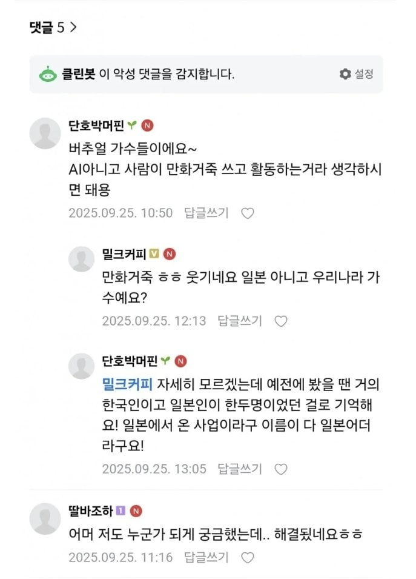

66 · 6 · 5 시간 전 · 원문



만화거죽 뒤집어쓴 애들
수집 당시 댓글 6개
응애나무 · 5 시간 전
갓반인 성님들 우리 애들 재밌구귀엽구 노래도 잘하구요추가로 새로운멤버인 4기생들 이번주 토요일, 일요일 오후5시,6시에 데뷔합니다 많관부
좆냥이는닥붐 · 5 시간 전
아담의 후예
년뒤에독을마시는새출간 · 5 시간 전
판넬 세워둔 라디오 방송
광어연어와사비 · 5 시간 전
표현 적절하네ㅋㅋㅋ
만화거죽 · 4 시간 전
만화거죽
코드싫어 · 4 시간 전
겉가죽팔이 ㅋㅋㅋ
갓반인 성님들 우리 애들 재밌구귀엽구 노래도 잘하구요
추가로 새로운멤버인 4기생들 이번주 토요일, 일요일 오후5시,6시에 데뷔합니다 많관부